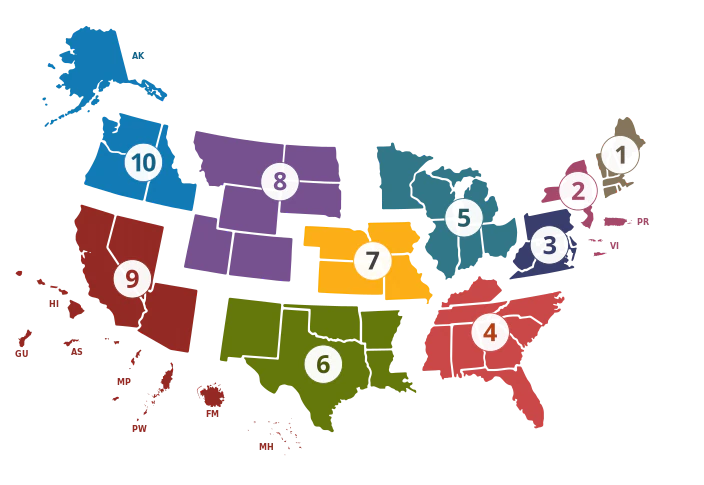
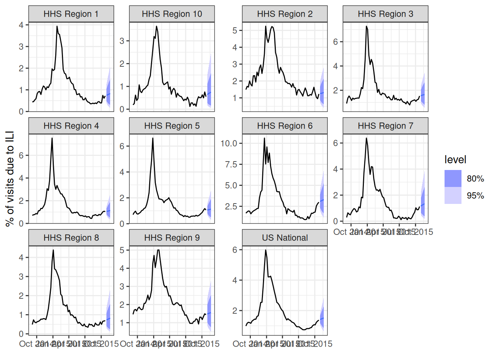

library("nfidd")
library("dplyr")
library("ggplot2")
library("epidatr")
library("fable")
library("hubUtils")
library("hubEvals")
library("hubVis")
library("hubData")
library("hubEnsembles")
theme_set(theme_bw())Local hub playground
Introduction
In this session we will try to take some of the lessons on building and evaluating forecasts in practice from the earlier sessions and and apply them. Parts of this session will be more open-ended than other sessions, enabling you to spend time doing some hands-on modeling of your own, or spending time reviewing some of the best practices and key concepts that we have covered in the course so far.
Slides
Objectives
The aims of this session are
- to introduce the use of modeling hubs and hubverse-style tools for local model development and collaborative modeling projects, and
- to practice building forecasting models using real data.
Setup
Source file
The source file of this session is located at sessions/hub-playground.qmd.
Libraries used
In this session we will use the dplyr package for data wrangling, the ggplot2 library for plotting, the fable package for building forecasting models, and the epidatr package for downloading epidemiological surveillance data.
Additionally, we will use some hubverse packages such as hubEvals, hubUtils, hubData, hubVis, hubEnsembles` packages for building ensembles.
Tip
The best way to interact with the material is via the Visual Editor of RStudio.
Initialisation
We set a random seed for reproducibility. Setting this ensures that you should get exactly the same results on your computer as we do. This is not strictly necessary but will help us talk about the models.
set.seed(406) # for Ted WilliamsA flu forecasting hub for model dev
We have built a live modeling hub for all participants of the class to use as a “sandbox” for building models and running analyses.
Tip
We are referring to this hub as a “sandbox” hub because it’s not an active hub in use by decision-makers. It’s a sandbox where we can build models and try things out without worrying about breaking them. But please don’t throw sand at each other!
We will also use the term local hub in this session. By this we mean any modeling hub that you set up on your local filesystem to do a modeling project. We’re going to set up a hub in the style of the hubverse, because you get a lot of added benefits from working with data in that format. But you could build a local hub however you want for your own modeling experiments.
If you can get through this session, the reward will be seeing your forecasts alongside the other forecasts at the online dashboard for this hub.
You should download this hub to your local laptop before continuing this session. Here are the two ways you can download this hub:
Download the hub as a fixed dataset using the link to this zip file.
If you are familiar with using GitHub (or want to get more familiar with it), then we recommend cloning the repo directly to your laptop.
- Login to GitHub using your existing GitHub account (or create one!).
- Clone this repository by clicking on the green “
<> Code” button on the main page of the Sandbox Hub repo. - For the rest of the code in this session to work smoothly, this repository should live inside the
sismid/directory that stores the material for this course.
Tip
Whether you use method 1 or 2 listed above, you should end up with a directory called sismid/sismid-ili-forecasting-sandbox/ on your local machine.
Caution
Note that you can clone the repo using HTTPS, but if you are going to be using and pushing to GitHub a lot, then setting up SSH keys and cloning via SSH is usually worth it.
ILI Forecasting at HHS Region level
We have done some modeling on ILI data in the earlier sessions. Our sandbox hub is set up to accept forecasts for the US level and the 10 Health and Human Services (HHS) Regions.

A forecast will produce quantile predictions of 1- through 4-week ahead forecasts of the estimated percentage of outpatient doctors office visits that are for IL. This target is given the label “ili perc” in the hub. Forecasts can be submitted for any week during the 2015/2016, 2016/2017, 2018/2019 or 2019/2020 influenza seasons.
Details of this hub
There are six models that already have made forecasts that live in the hub: hist-avg, delphi-epicast, protea-cheetah, lanl-dbmplus, kot-kot, and neu-gleam.
We will assume that you have the hub repository downloaded to your local machine as described in the section above.
hub_path <- here::here("sismid-ili-forecasting-sandbox")
hub_con <- connect_hub(hub_path)We can look at one forecast from the hub to get a sense of what a forecast should look like:
hub_con |>
filter(model_id == "delphi-epicast",
origin_date == "2015-11-14") |>
collect_hub()# A tibble: 1,012 × 9
model_id location origin_date horizon target_end_date target output_type output_type_id value
* <chr> <chr> <date> <int> <date> <chr> <chr> <dbl> <dbl>
1 delphi-epic… HHS Reg… 2015-11-14 1 2015-11-21 ili p… quantile 0.01 0.504
2 delphi-epic… HHS Reg… 2015-11-14 1 2015-11-21 ili p… quantile 0.025 0.512
3 delphi-epic… HHS Reg… 2015-11-14 1 2015-11-21 ili p… quantile 0.05 0.525
4 delphi-epic… HHS Reg… 2015-11-14 1 2015-11-21 ili p… quantile 0.1 0.551
5 delphi-epic… HHS Reg… 2015-11-14 1 2015-11-21 ili p… quantile 0.15 0.578
6 delphi-epic… HHS Reg… 2015-11-14 1 2015-11-21 ili p… quantile 0.2 0.604
7 delphi-epic… HHS Reg… 2015-11-14 1 2015-11-21 ili p… quantile 0.25 0.630
8 delphi-epic… HHS Reg… 2015-11-14 1 2015-11-21 ili p… quantile 0.3 0.657
9 delphi-epic… HHS Reg… 2015-11-14 1 2015-11-21 ili p… quantile 0.35 0.683
10 delphi-epic… HHS Reg… 2015-11-14 1 2015-11-21 ili p… quantile 0.4 0.709
# ℹ 1,002 more rowsBuilding forecasts for multiple locations
Let’s start as we did in other sessions by downloading the data that we want to work with.
First, we define some location information:
locs <- c("nat",
"hhs1", "hhs2", "hhs3", "hhs4", "hhs5",
"hhs6", "hhs7", "hhs8", "hhs9", "hhs10")
location_formal_names <- c("US National", paste("HHS Region", 1:10))
loc_df <- data.frame(region = locs, location = location_formal_names)The following code will download data from epidatr, but we have also downloaded these data as a static data object for reproducibility.
flu_data_hhs <- pub_fluview(regions = locs,
epiweeks = epirange(200335, 202035)) |>
## aligning with the notation and dates for the hub
## in epidatr, weeks are labeled with the first day of the epiweek
## in the hub, weeks are labeled with the last day of the epiweek
mutate(origin_date = epiweek + 6) |>
left_join(loc_df) |>
select(location, origin_date, wili) |>
as_tsibble(index = origin_date, key = location)The following code will load the saved data into the session:
data(flu_data_hhs)Building a simple forecast for multiple locations
We’re going to start by building a simple auto-regressive forecast without putting too much thought into which exact model specification we choose. Let’s try, for starters, an ARIMA(2,1,0) with a fourth-root transformation. Recall, that this means we are using two auto-regressive terms with one set of differencing of the data.
fourth_root <- function(x) x^0.25
inv_fourth_root <- function(x) x^4
my_fourth_root <- new_transformation(fourth_root, inv_fourth_root)
fit_arima210 <- flu_data_hhs |>
filter(origin_date <= "2015-10-24") |>
model(ARIMA(my_fourth_root(wili) ~ pdq(2,1,0)))
forecast(fit_arima210, h=4) |>
autoplot(flu_data_hhs |>
filter(
origin_date <= "2015-10-24",
origin_date >= "2014-09-01"
)) +
facet_wrap(.~location, scales = "free_y") +
labs(y = "% of visits due to ILI",
x = NULL)
Note that if you set up your tsibble object correctly, with the "location" column as a key variable, then fable will fit and forecast 11 separate versions of the ARIMA(2,1,0) model for you directly, one for each of the locations in the dataset.
Each model can be inspected as before
fit_arima210 |>
filter(location == "HHS Region 1") |>
report(model)Series: wili
Model: ARIMA(2,1,0)
Transformation: my_fourth_root(wili)
Coefficients:
ar1 ar2
0.0302 0.0354
s.e. 0.0397 0.0403
sigma^2 estimated as 0.004699: log likelihood=800.67
AIC=-1595.33 AICc=-1595.29 BIC=-1581.98fit_arima210 |>
filter(location == "HHS Region 9") |>
report(model)Series: wili
Model: ARIMA(2,1,0)
Transformation: my_fourth_root(wili)
Coefficients:
ar1 ar2
-0.0938 -0.0118
s.e. 0.0402 0.0402
sigma^2 estimated as 0.004732: log likelihood=798.43
AIC=-1590.86 AICc=-1590.82 BIC=-1577.51Ideas for more complex models
Below, you will be encouraged to try fitting your own models. Here are some ideas of other models you could try:
- use the
fable::VAR()model to build a multivariate vector auto-regressive model. - use the
fable::NNETAR()model to build a neural network model. - add forecasts from the renewal model (this may take some time to run, but it would be interesting!)
- add forecasts from other variants of the
fable::ARIMA()models - try out other specifications of transformations (e.g. a log transformation instead of a fourth-root) or the number of fourier terms.
- incorporate another model of your choice.
- build some ensembles of all (or a subset) of the models you created.
Designing forecast validation and testing
There are five seasons worth of weeks that we can make forecasts for in our sandbox hub. We will design an validation and testing experiment where we will use the first two seasons (2015/2016 and 2016/2017) as our “validation set”. We can fit as many models as we want to on the weeks during these two seasons. However, to show that we have a modeling process that can create a reliable forecasting model, we want to pass only 1-2 models on to the test phase to measure their performance. We want to pass along only models that we think will perform well in the test phase.
Validation-phase forecasts
We’ll follow the same time-series cross-validation recipe that we used in the session on forecast evaluation to run multiple forecasts at once for our validation phase.
You could adapt the code below to run validation-phase forecasts.
Here are all the valid origin_dates that we could submit forecasts for, read directly from the hub:
origin_dates <- hub_path |>
read_config("tasks") |>
get_round_ids()
origin_dates [1] "2015-10-17" "2015-10-24" "2015-10-31" "2015-11-07" "2015-11-14" "2015-11-21" "2015-11-28"
[8] "2015-12-05" "2015-12-12" "2015-12-19" "2015-12-26" "2016-01-02" "2016-01-09" "2016-01-16"
[15] "2016-01-23" "2016-01-30" "2016-02-06" "2016-02-13" "2016-02-20" "2016-02-27" "2016-03-05"
[22] "2016-03-12" "2016-03-19" "2016-03-26" "2016-04-02" "2016-04-09" "2016-04-16" "2016-04-23"
[29] "2016-04-30" "2016-05-07" "2016-10-22" "2016-10-29" "2016-11-05" "2016-11-12" "2016-11-19"
[36] "2016-11-26" "2016-12-03" "2016-12-10" "2016-12-17" "2016-12-24" "2016-12-31" "2017-01-07"
[43] "2017-01-14" "2017-01-21" "2017-01-28" "2017-02-04" "2017-02-11" "2017-02-18" "2017-02-25"
[50] "2017-03-04" "2017-03-11" "2017-03-18" "2017-03-25" "2017-04-01" "2017-04-08" "2017-04-15"
[57] "2017-04-22" "2017-04-29" "2017-05-06" "2017-10-21" "2017-10-28" "2017-11-04" "2017-11-11"
[64] "2017-11-18" "2017-11-25" "2017-12-02" "2017-12-09" "2017-12-16" "2017-12-23" "2017-12-30"
[71] "2018-01-06" "2018-01-13" "2018-01-20" "2018-01-27" "2018-02-03" "2018-02-10" "2018-02-17"
[78] "2018-02-24" "2018-03-03" "2018-03-10" "2018-03-17" "2018-03-24" "2018-03-31" "2018-04-07"
[85] "2018-04-14" "2018-04-21" "2018-04-28" "2018-05-05" "2018-10-13" "2018-10-20" "2018-10-27"
[92] "2018-11-03" "2018-11-10" "2018-11-17" "2018-11-24" "2018-12-01" "2018-12-08" "2018-12-15"
[99] "2018-12-22" "2018-12-29" "2019-01-05" "2019-01-12" "2019-01-19" "2019-01-26" "2019-02-02"
[106] "2019-02-09" "2019-02-16" "2019-02-23" "2019-03-02" "2019-03-09" "2019-03-16" "2019-03-23"
[113] "2019-03-30" "2019-04-06" "2019-04-13" "2019-04-20" "2019-04-27" "2019-05-04" "2019-10-12"
[120] "2019-10-19" "2019-10-26" "2019-11-02" "2019-11-09" "2019-11-16" "2019-11-23" "2019-11-30"
[127] "2019-12-07" "2019-12-14" "2019-12-21" "2019-12-28" "2020-01-04" "2020-01-11" "2020-01-18"
[134] "2020-01-25" "2020-02-01" "2020-02-08" "2020-02-15" "2020-02-22" "2020-02-29"We will define time-series cross-validation datasets for each season separately, as we want to make sure that we start and end each season at the correct time.
Make season 1 forecasts
Here, we define a time-series cross-validation dataset for the first season
flu_data_hhs_tscv_season1 <- flu_data_hhs |>
filter(
origin_date <= "2016-05-07" ## last 2015/2016 date
) |>
tsibble::stretch_tsibble(
.init = 634, ## flu_data_hhs |> filter(location == "HHS Region 1", origin_date <= "2015-10-17") |> nrow()
.step = 1,
.id = ".split"
)
flu_data_hhs_tscv_season1# A tsibble: 214,005 x 4 [7D]
# Key: .split, location [330]
location origin_date wili .split
<chr> <date> <dbl> <int>
1 HHS Region 1 2003-08-30 0.559 1
2 HHS Region 1 2003-09-06 0.423 1
3 HHS Region 1 2003-09-13 0.0677 1
4 HHS Region 1 2003-09-20 0.0694 1
5 HHS Region 1 2003-09-27 0.594 1
6 HHS Region 1 2003-10-04 0.572 1
7 HHS Region 1 2003-10-11 0.449 1
8 HHS Region 1 2003-10-18 0.614 1
9 HHS Region 1 2003-10-25 0.661 1
10 HHS Region 1 2003-11-01 0.761 1
# ℹ 213,995 more rowsAnd now we will run all of the forecasts and make 1 through 4 week forecasts, including the generate() function to generate predictive samples and then extracting the quantiles. This code also reformats the fable-style forecasts into the required hubverse structure for this hub.
quantile_levels <- c(0.01, 0.025, seq(0.05, 0.95, 0.05), 0.975, 0.99)
cv_forecasts_season1 <-
flu_data_hhs_tscv_season1 |>
model(
arima210 = ARIMA(my_fourth_root(wili) ~ pdq(2,1,0))
) |>
generate(h = 4, times = 100, bootstrap = TRUE) |>
## the following 3 lines of code ensure that there is a horizon variable in the forecast data
group_by(.split, .rep, location, .model) |>
mutate(horizon = row_number()) |>
ungroup() |>
as_tibble() |>
## make hubverse-friendly names
rename(
target_end_date = origin_date,
value = .sim,
model_id = .model
) |>
left_join(loc_df) |>
mutate(origin_date = target_end_date - horizon * 7L) |>
## compute the quantiles
group_by(model_id, location, origin_date, horizon, target_end_date) |>
reframe(tibble::enframe(quantile(value, quantile_levels), "quantile", "value")) |>
mutate(output_type_id = as.numeric(stringr::str_remove(quantile, "%"))/100, .keep = "unused",
target = "ili perc",
output_type = "quantile",
model_id = "sismid-arima210")Joining with `by = join_by(location)`
Tip
Note that you need to choose a model_id for your model. It is required by our hub to have the format of [team abbreviation]-[model abbreviation]. When you are making a local hub, you should pick a team abbreviation that is something short and specific to you. For now, we’re going to use sismid as the team abbreviation. (See last line of code above for where I create the name.)
The above table has 30360 rows, which makes sense because there are
- 30 origin dates
- 11 locations
- 4 horizons
- 23 quantiles
And \(30 \cdot 11 \cdot 4 \cdot 23 = 30,360\).
Let’s plot one set of forecasts as a visual sanity check to make sure our reformatting has worked.
cv_forecasts_season1 |>
filter(origin_date == "2015-12-19") |>
plot_step_ahead_model_output(
flu_data_hhs |>
filter(origin_date >= "2015-10-01",
origin_date <= "2015-12-19") |>
rename(observation = wili),
x_target_col_name = "origin_date",
x_col_name = "target_end_date",
use_median_as_point = TRUE,
facet = "location",
facet_scales = "free_y",
facet_nrow=3
)Warning: ! `model_out_tbl` must be a `model_out_tbl`. Class applied by defaultMake season 2 forecasts
Here, we define a time-series cross-validation dataset for the second season.
first_idx_season2 <- flu_data_hhs |>
filter(location == "HHS Region 1",
origin_date <= "2016-10-22") |> ## first 2016/2017 date
nrow()
flu_data_hhs_tscv_season2 <- flu_data_hhs |>
filter(
origin_date <= "2017-05-06" ## last 2016/2017 date
) |>
tsibble::stretch_tsibble(
.init = first_idx_season2,
.step = 1,
.id = ".split"
)Generate and reformat season 2 forecasts:
cv_forecasts_season2 <-
flu_data_hhs_tscv_season2 |>
model(
arima210 = ARIMA(my_fourth_root(wili) ~ pdq(2,1,0))
) |>
generate(h = 4, times = 100, bootstrap = TRUE) |>
## the following 3 lines of code ensure that there is a horizon variable in the forecast data
group_by(.split, .rep, location, .model) |>
mutate(horizon = row_number()) |>
ungroup() |>
as_tibble() |>
## make hubverse-friendly names
rename(
target_end_date = origin_date,
value = .sim,
model_id = .model
) |>
left_join(loc_df) |>
mutate(origin_date = target_end_date - horizon * 7L) |>
## compute the quantiles
group_by(model_id, location, origin_date, horizon, target_end_date) |>
reframe(tibble::enframe(quantile(value, quantile_levels), "quantile", "value")) |>
mutate(output_type_id = as.numeric(stringr::str_remove(quantile, "%"))/100, .keep = "unused",
target = "ili perc",
output_type = "quantile",
model_id = "sismid-arima210")Joining with `by = join_by(location)`Save the forecasts locally
Now let’s save the validation forecasts locally so that we can incorporate these forecasts with the existing forecasts in the hub.
First, we need to create a model metadata file (formatted as a YAML file) and store it in the hub. This can be something very minimal, but there are a few required pieces. Here is some simple code to write out a minimal model metadata file.
this_model_id <- "sismid-arima210"
metadata_filepath <- file.path(
hub_path,
"model-metadata",
paste0(this_model_id, ".yml"))
my_text <- c("team_abbr: \"sismid\"",
"model_abbr: \"arima210\"",
"designated_model: true")
writeLines(my_text, metadata_filepath)And now we can write the files out, one for each origin_date.
# Group the forecasts by task id variables
groups <- bind_rows(cv_forecasts_season1, cv_forecasts_season2) |>
group_by(model_id, target, origin_date) |>
group_split()
# Save each group as a separate CSV
for (i in seq_along(groups)) {
group_df <- groups[[i]]
this_model_id <- group_df$model_id[1]
this_origin_date <- group_df$origin_date[1]
## remove model_id from saved data, as it is implied from filepath
group_df <- select(group_df, -model_id)
## path to the file from the working directory of the instructional repo
model_folder <- file.path(
hub_path,
"model-output",
this_model_id)
## just the filename, no path
filename <- paste0(this_origin_date, "-", this_model_id, ".csv")
## path to the file
results_path <- file.path(
model_folder,
filename)
## if this model's model-out directory doesn't exist yet, make it
if (!file.exists(model_folder)) {
dir.create(model_folder, recursive = TRUE)
}
write.csv(group_df, file = results_path, row.names = FALSE)
### if you run into errors, the code below could help trouble-shoot validations
# hubValidations::validate_submission(
# hub_path = hub_path,
# file_path = file.path(this_model_id, filename)
# )
}Local hub evaluation
Now that you have your model’s forecasts in the local hub, you should be able to run an evaluation to compare the model’s forecasts to the model in the hub.
We first collect the forecasts from the hub (including our new model)
validation_origin_dates <- origin_dates[which(as.Date(origin_dates) <= as.Date("2017-05-06"))]
new_hub_con <- connect_hub(hub_path)
validation_forecasts <- new_hub_con |>
filter(origin_date %in% validation_origin_dates) |>
collect_hub()and then compare them to the oracle output.
oracle_output <- connect_target_oracle_output(hub_path) |>
collect()
hubEvals::score_model_out(
validation_forecasts,
oracle_output
) |>
arrange(wis) |>
knitr::kable(digits = 2)| model_id | wis | overprediction | underprediction | dispersion | bias | interval_coverage_50 | interval_coverage_90 | ae_median |
|---|---|---|---|---|---|---|---|---|
| sismid-nnetar | 0.19 | 0.08 | 0.06 | 0.05 | 0.08 | 0.33 | 0.78 | 0.29 |
| kzank-arima120_fourier1 | 0.19 | 0.03 | 0.07 | 0.08 | -0.07 | 0.54 | 0.94 | 0.29 |
| sismid-kznn1 | 0.19 | 0.08 | 0.06 | 0.05 | 0.06 | 0.30 | 0.75 | 0.30 |
| sismid_mb-arima200_fourier | 0.20 | 0.03 | 0.10 | 0.08 | -0.12 | 0.60 | 0.89 | 0.31 |
| sismid-NNETARdugqbc2 | 0.21 | 0.09 | 0.06 | 0.05 | 0.14 | 0.24 | 0.75 | 0.32 |
| KS-ar_auto | 0.21 | 0.03 | 0.10 | 0.08 | -0.13 | 0.56 | 0.92 | 0.33 |
| AEM-fourier_ar210 | 0.22 | 0.04 | 0.09 | 0.09 | -0.03 | 0.49 | 0.91 | 0.34 |
| sismid-arima210a | 0.22 | 0.04 | 0.09 | 0.08 | -0.04 | 0.50 | 0.90 | 0.34 |
| sismid-arima210log10 | 0.22 | 0.05 | 0.09 | 0.08 | -0.04 | 0.47 | 0.89 | 0.35 |
| nm-nnetar | 0.29 | 0.09 | 0.12 | 0.08 | 0.00 | 0.37 | 0.74 | 0.43 |
| sismid-mueda | 0.31 | 0.04 | 0.13 | 0.13 | -0.03 | 0.62 | 0.90 | 0.47 |
| delphi-epicast | 0.31 | 0.10 | 0.07 | 0.14 | 0.08 | 0.47 | 0.90 | 0.44 |
| sismid-arima210 | 0.32 | 0.09 | 0.09 | 0.14 | -0.01 | 0.49 | 0.94 | 0.52 |
| joy-arima210 | 0.33 | 0.10 | 0.09 | 0.14 | 0.03 | 0.45 | 0.93 | 0.53 |
| sismid-var2sqrt | 0.34 | 0.12 | 0.11 | 0.11 | 0.02 | 0.46 | 0.85 | 0.53 |
| sismid-ensemblev2 | 0.35 | 0.13 | 0.10 | 0.11 | 0.06 | 0.47 | 0.85 | 0.53 |
| sismid-arima011 | 0.43 | 0.16 | 0.13 | 0.14 | 0.03 | 0.26 | 0.86 | 0.72 |
| hist-avg | 0.45 | 0.06 | 0.16 | 0.23 | -0.13 | 0.56 | 0.95 | 0.67 |
| kot-kot | 2.50 | 1.44 | 0.00 | 1.06 | 0.72 | 0.13 | 0.97 | 4.49 |
Here we can see that our new sismid-arima210 model has a bit lower probabilistic accuracy (higher WIS) than the delphi-epicast model, and has better accuracy than the hist-avg model. Also, it shows less bias than either of the other models, although a bit more dispersion (it is less sharp) than the delphi-epicast model.
Caution
Note that the forecasts that we make are using the finalized version of the data, whereas the pre-existing models that are in the hub were generated using data that was available in real-time. This is potentially a considerable disadvantage, if data ended up being substantially revised, therefore these evaluations against the “real” models should be interpreted with caution.
Selecting models for the “testing phase”
You are now officially turned loose to build more models in this sandbox hub!
A reminder that this hub contains five seasons for which you can submit forecasts, starting with 2015/2016 and ending with 2019/2020. Our recommended procedure is to use the first two years as a place to do as much model fitting as you have time for. You could create multiple flavors of ARIMA, or any of the more complex models suggested just above. To do this in a “complete” way, you might create between 10 and 100 different variations of models.
Then, from those models, select the few that you think will do the best in the final three seasons. (We can think of the last three years as our real-time forecast “testing phase”.) This selection process is important, and tricky to think about.
Tip
In general you want to pick models that have performed well in some time-series cross-validation (similar to the analysis we ran above in this session). But, you might also want to prioritize choosing models that are simpler (i.e., have fewer parameters) and therefore are less likely to be “overfit” to the cross-validation phase.
You could also consider splitting the models into a few different classes and picking 1-2 models from each class, e.g. your best ARIMA model, your best NNETAR model, your best ensemble, etc…
Once you’ve selected the models, you can generate and submit forecasts for the test phase to your local hub.
Submitting test-phase forecasts to an online hub
If you’ve gotten this far, congratulations!
As a last test of your forecasting prowess, we invite you to submit the forecasts for your test-phase models to our online sismid-ili-forecasting-sandbox hub.
If you can get through this process, the reward will be seeing your forecasts on the online dashboard for this hub.
Process of submitting to an online hub
The best way to submit to an online hub is via a pull request initiated through GitHub.
Drag and drop
If you’re not that familiar with GitHub and you have forecasts that you’d like to upload, work with an instructor or another participant who does have access to the hub. They will be able to create a subfolder of the model-output directory of the hub for you to upload forecasts to via a Drag and Drop.
You still will need a GitHub account (sign up here if you don’t have one).
Cloning repo, submitting via PR
Caution
The following assumes that you have a GitHub account and some basic working knowledge of GitHub interactions and terminology.
Fork the
sismid-ili-forecasting-sandboxhub so you have a copy of this repository owned by your GitHub user account.Clone your fork of the repo to your laptop (ideally, it should live at the top level within the
sismiddirectory with these course materials).Put whatever model-metadata and forecasts you want to submit into the correct locations in the hub.
Commit these changes to your local clone and push those changes to your fork on GitHub.
Open a Pull Request (PR) back to the primary repository with your changes.
Once the PR is open, watch the validations, and inspect/fix any errors that appear.
If your forecasts pass validations, then an instructor will merge them in.